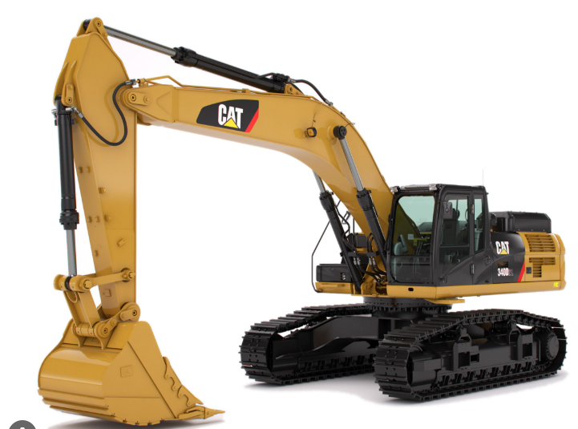
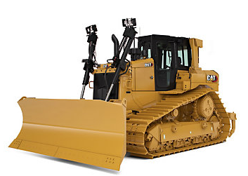
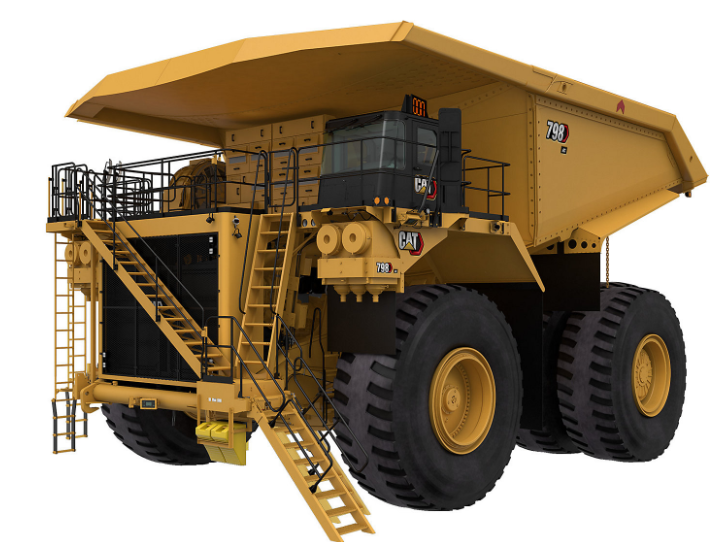
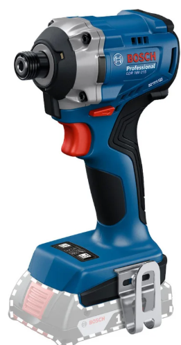
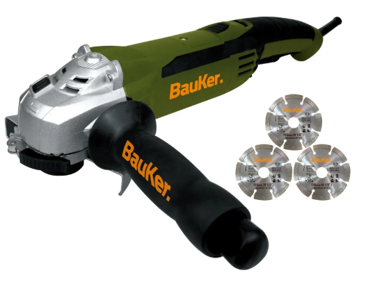
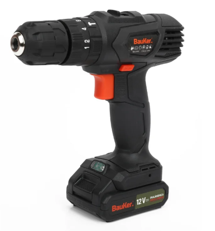

En este espacio podrás visualizar nuestra maquinaria y herramientas disponibles
Ver inventario
Esta máquina es una excavadora hidráulica sobre orugas de Caterpillar, específicamente identificada como el modelo Cat 340D2 L. Pertenece a la categoría de excavadoras grandes, diseñadas para proyectos de gran magnitud que requieren alta potencia, fiabilidad y durabilidad.

Es el resultado de una constante evolución,
diseñado para ofrecer un rendimiento superior en cada proyecto.
Gracias a innovaciones tecnológicas como la implementación
del nuevo convertidor de par, el nuevo D10 es más eficiente
en el consumo de combustible, más fácil de mantener
y más duradero que sus predecesores.

Está diseñado para acarrear más, con más eficiencia, capacidad de control y confiabilidad que cualquier otro camión de mando eléctrico en el mercado. Si bien es una incorporación reciente a la línea de máxima categoría de Cat, ofrece el mismo rendimiento potente y comprobado que puede esperar de un camión Cat.

¡Potencia y rapidez para tus proyectos más exigentes! El Atornillador de Impacto Bosch GDR 18V-215 es tu aliado perfecto para trabajos en madera y metal. Su motor Brushless garantiza mayor durabilidad, mientras que sus 3.300 RPM y 215 Nm de torque te permiten atornillar con facilidad en materiales densos y metales de hasta 3 mm. Ideal para tornillos de hasta 80-140 mm en estructuras, este atornillador te asegura un acabado profesional en cada tarea.

Dale potencia a tus proyectos con el Kit Pulidora Bauker, ¡la herramienta ideal para trabajos profesionales! Con su potente motor de 1010w y un diámetro de disco de 4-1/2 pulgadas, podrás realizar cortes precisos y eficientes. Su color verde le da un toque moderno y su peso de 16 kg asegura estabilidad durante el uso. Incluye 3 discos de corte para que empieces a trabajar de inmediato.

Dale vida a tus proyectos con el Taladro Percutor Bauker, ¡tu mejor aliado para trabajos profesionales! Con su potente motor de 12 V y un tamaño de mandril de 10 mm, este taladro inalámbrico te permitirá realizar perforaciones con precisión y eficiencia. Su diseño ergonómico y ligero te brindará comodidad durante el uso, mientras que su batería de 1,3 Ah te asegura una autonomía suficiente para completar tus tareas.
Asesoría y gestión de proyectos.
Arquitectura e ingeniería especializada.
Ejecución integral de obras civiles.